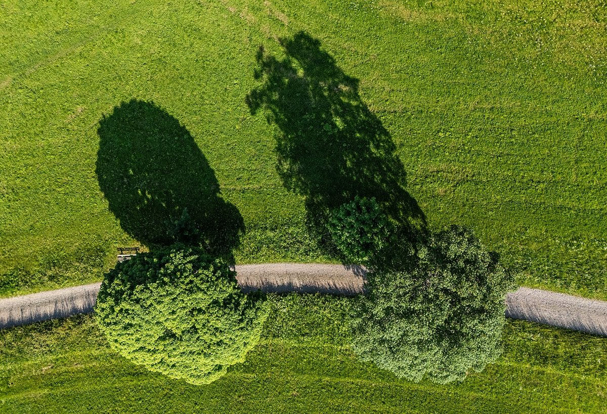

Le Schwarzwald : Guide Complet pour une Escapade Inoubliable

Introduction
Le Schwarzwald, ou Forêt-Noire en français, est une région emblématique d'Allemagne, célèbre pour ses paysages verdoyants, ses collines ondulantes et son ambiance féerique. Situé dans le Bade-Wurtemberg, ce parc naturel est une destination idéale pour les amoureux de nature, de randonnée et de traditions locales. Voici un guide complet pour organiser votre voyage.
Comment s'y rendre ?
Le Schwarzwald est facilement accessible depuis la France. En voiture, comptez environ 2h depuis Strasbourg ou 4h depuis Mulhouse. Les autoroutes A5 (depuis Bâle) et A8 (depuis Stuttgart) desservent la région. En train, les gares principales sont Fribourg-en-Brisgau, Baden-Baden et Offenburg, avec des correspondances en bus locaux. Les aéroports les plus proches sont ceux de Bâle-Mulhouse (EuroAirport) et Stuttgart.
Quand partir ?
Chaque saison a son charme : le printemps pour les fleurs sauvages, l'été pour les randonnées et les lacs, l'automne pour les couleurs flamboyantes, et l'hiver pour les marchés de Noël et le ski. Évitez les week-ends de grande affluence si vous préférez la tranquillité.
Les incontournables
1. Le lac Titisee
Ce lac glaciaire est un joyau entouré de forêts. Parfait pour une balade en bateau, une baignade ou une promenade sur ses rives. Ne manquez pas de goûter la fameuse Forêt-Noire (Schwarzwälder Kirschtorte) dans les cafés alentour.
2. Triberg et ses chutes d'eau
Les chutes de Triberg, parmi les plus hautes d'Allemagne, valent le détour. Le village est aussi réputé pour ses horloges à coucou artisanales – visitez un atelier pour voir leur fabrication.
3. Fribourg-en-Brisgau
Cette ville universitaire dynamique est la porte d'entrée du Schwarzwald. Explorez sa cathédrale gothique, ses ruelles médiévales et ses « Bächle », petits canaux typiques.
4. La Route des Vins de Bade
À l'ouest du Schwarzwald, cette route traverse des vignobles pittoresques. Dégustez des vins locaux comme le Pinot Noir (Spätburgunder) dans les caves traditionnelles.
5. La vallée de la Murg
Moins fréquentée, cette vallée offre des paysages sauvages, des chemins de randonnée et des villages authentiques comme Gernsbach, classé parmi les plus beaux d'Allemagne.
Gastronomie locale
La cuisine du Schwarzwald est généreuse : essayez le jambon fumé (Schwarzwälder Schinken), les « Maultaschen » (ravioles farcies) ou le « Flammkuchen » (tarte flambée). Pour les gourmands, la Forêt-Noire (gâteau au chocolat, cerises et kirsch) est un must. Accompagnez le tout d'une eau-de-vie de cerise (Kirschwasser) ou d'un vin local.
Conseils pratiques
Prévoyez de bonnes chaussures pour les randonnées. Les transports en commun (trains et bus) sont efficaces, mais une voiture offre plus de flexibilité pour explorer les petits villages. En hiver, certaines routes peuvent être fermées à cause de la neige.
Conclusion
Le Schwarzwald est une destination polyvalente, alliant nature préservée, culture et gastronomie. Que vous y passiez un week-end ou une semaine, cette région vous charmera par son authenticité et sa beauté intemporelle.
Haiktec
- YouTube Content ROI Tracker & Budget Planner 2026
- Le Guide Pratique pour les Enseignants : Stratégies Simples pour Gagner du Temps et Améliorer vos Cours
- Planificateur de Chantier & Suivi Budgétaire pour Artisans
Text mit KI erstellt und automatisch geprueft.